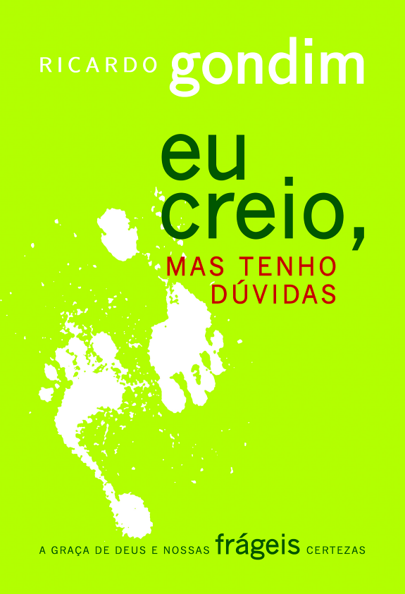

2:51 · 1 OPERA
Mario de Andrade, La mia anima ha fretta.
Il filo del discorso
La lettura riflette sul tempo che resta, paragonandolo ai pochi dolci che un bambino impara ad assaporare. Rifiuta riunioni inconcludenti, formalismi e relazioni immature, per cercare dignità, autenticità e intensità nella maturità. Il relatore introduce il testo come opera di Mário de Andrade; i riscontri dell’autore e dell’editore lo riconducono invece a un adattamento di Tempo que foge! di Ricardo Gondim. La versione italiana aggiunge o modifica parti, compresa la chiusura sulle due vite, la cui provenienza non è qui stabilita.
I libri nel discorso

Tempo que foge!
Identificazione probabile
Copertina: Editora Ultimato, 2007
Il contenitore cartaceo è documentato da due pagine dell'editore, fra cui la dichiarazione dell'autore che indica pagina 107. Edizione illustrativa del testo breve; non identificata nel video. Copertina autentica dal catalogo Google Books.
Il relatore introduce Mario de Andrade e La mia anima ha fretta. Seguono il tempo contato, la metafora dei dolci, il rifiuto di riunioni e formalismi e la ricerca dell’essenziale: struttura riconducibile al testo di Gondim.
Passaggio 0:01 ↗ · Fonti e libro ↗